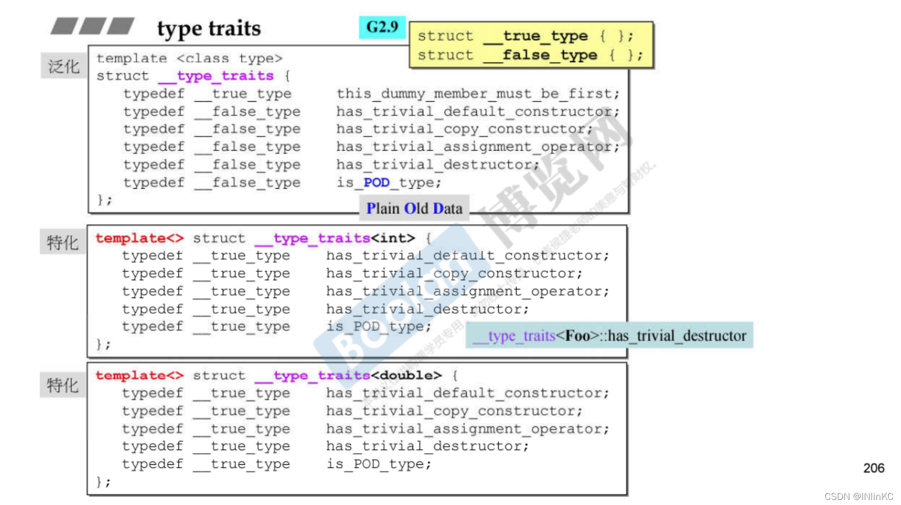

C++11STL
Table of Contents
STL 六大部件
- 容器
Container - 分配器
Allocators用于为算法分配地址 - 算法
Algorithms - 迭代器
Iterators容器中就会有迭代器，用于遍历元素，就是可以表示容器中的所有种类的元素 - 适配器
Adapters就像是一个泛化的指针， 对迭代器，仿函数，容器进行适配 - 仿函式
Functors就是一种函数 数据在容器里，操作数据的函数在另外的类里
时间复杂度(Big-oh)
- $O(1),O(c)$ ： 常数时间
- $O(n)$ ：线性时间
- $O(\log_n x)$ ：次线性时间
- $O(n^2)$ ：平方时间
- $O(n^3)$ ：立方时间
- $O(2^n)$ ：指数时间
- $O(n\log_2n)$ ：线性与二次方成长之间的模式
容器
Sequence Container(序列式)
-
Arrary(数组) 固定大小 12 -
Vector(向量) 末尾扩充 12heap以算法形式呈现（xxx_heap()）12priority_queue12
-
List(双向环状链表) 任意进出 4->8 -
Forward-List(单向链表) 任意进出 4List比Forward-List占用内存多 -
slist单向 非标准 之后改为forward_list4 -
Deque(双向队列) 两端扩充删减 40queue40
-
stack40
Associative Contaiiner(关联式) (用于大量查找)(一般都用二分的方法，两侧均匀分布)
Set/Multiset用红黑数[高度平衡]来作set，没有key和value之分，set里面的内容不可重复,可以用Multiset12 -> 24Map/Multimap每个元素都有key和value，可以用key来查找，map里面的元素不可重复,可以用Multiset12 -> 24hashtable之后所有hash改变为unorderedhash_set20 -> 28hash_map20 -> 28hash_multiset20 -> 28hash_multimap20 -> 28rb_tree12 -> 24 (非公开)
Unorderd Container(不定序) (其实也是一种关联式的)
Unordered Set/MultiSetUnordered Map/Multimap
HashTable Sepreate Chaining ，分离链接法，解决 hash碰撞（冲突）的方法
每一个存放的位置就是一个链表，把元素存入相应的位置，如果元素都在同一位置就存在同一位置上
range-based for statement
类似于 python 的遍历循环
for(i:list)
引用
在c++中，在某一个函数中引用某一个变量并不会改变该变量的数值，只有使用引用或者指针才可以
auto
对于 auto 的变量，编译器会自动识别变量类型，但是也要知道是什么类型
分配器(allocator)
可以直接使用分配器来分配内存，释放内存，元素越小，分配器分配的多余的内存占比越高，如果使用分配器，分配几个就是释放几个， allocate 和 deallocate 就是分配内存和删除分配
allocate 实际上是调用的 operate new
deallocate 实际上是调用的 operate delete
|
|
最常用的是
new - delete new() 调用的也是 malloc(),free()用于分配内存
malloc - free
OOP(Object-Oriented Programming) GP(Generic Programming)
面向对象编程和泛型编程
- OOP 企图将
datas和methods关联起来 就是类里面包含data和function - GP 企图将
datas和methods分开来 类里只包含数据或者只包含function
操作符重载
原则就是向整数的运算方式靠近
链表的例子，对于 ++ 操作符重载，对于 -- 也是如此
-
后置
i++不可以加两次，传回来的是结构体c++++1self operator++(int) {self tmp = *this; ++*this; return tmp;} // 记下来原来的东西，然后前进一个，返回原来的值，引用前置++的重载，这里的 = 也被重载，就是一个拷贝构造函数 -
前置
++i可以加两次，因为传回来的是引用++++c1self& operator++() {node = (link_type)((*node).next); return *this;}
模板
所有的模板函数 template< typename, class Allocator = allocator<T>> ，默认第二个参数为 allocator<T>
-
类模板
-
泛化 可以接受任意类型的变量
1template <class T> struc __type_traits{...} -
特化 对某一种类的变量有独特的定义
1 2 3 4 5template <class T> struc __type_traits{} template <> struc __type_traits<short>{...} template <> struc __type_traits<int>{...} // 另一种方法 __STL_TEMPLATE_NULL struc __type_traits<char>{...} -
偏特化
个数上的：有多个模板参数，但是只绑定其中的几个的一种特化
范围上的：必须有一个主模板,模板类型被部分明确化
1 2// 本来是类型 T ，缩小范围到 T* T的指针 template <class T> struc __type_traitsz<T*>{...}
-
-
函数模板
1 2template<typename T> void func(T a); -
模板模板
1 2template<typename T, template<typename N> typename Continer> void func(T a, Continer<U> b);
Iterator
迭代器，用于链接容器和算法，为了使标准算法也适用于 native pointer（普通的指针, int…），因为 native pointer 不像 iterator 一样已经定义算法所需的五个信息，要想标准算法也适用于 native pointer ，就必须要 native pointer 提供那五个信息， iterator_traits 做的就是这个工作，帮助 native pointer 告诉算法那五个信息，这就是 iterator_traits 关键作用所在
在运算过程中，容器需要得到算法的下面五种类型，但是只有迭代器 iterator 拥有下面 5 种类型，所以就需要算法来获取运算的类型，就是 iterator_traits() 可以获取算法的类型
运行过程：算法提问→迭代器回答
有 5 种问题，就是这五种类型：
iterator_category类别difference_type距离value_type数值reference_type引用pointer_type指针
Iterator Traits
特性，特质，是一个特性类，用来定义迭代器的属性，会判断是 class iterator 还是 non-class iterators
vector
类中，只有 data 占用内存，动态增长的 array，用3个指针来控制整个容器，内部含有3个指针， vector 本身所占内存为 3 个字节
在有新的数据 push_back 时，如果还有存储空间那就放进去，如果没有足够的存储空间，容器就会两倍增长，前半段储存原数据，后半段储存新的数据，增长的时候就会在计算机里开辟一段新的空间，并且删除原来的。其实就是放不下了又重新找了块2倍大的地，再搬过去。如果使用 insert 插入，也需要将所有元素搬过去
array
array 不能扩充，在定义时就需要指明大小
forward_list
单向链表和 list 相似
deque
iterator start 每个里面包含四个指针，就是下面的四个，指向开始的 node
iterator finish 每个里面包含四个指针，就是下面的四个，指向结尾 node 的下一个 node
map_pointer map 指向一块连续的空间，空间内储存 node，node 内存储数据
size_type map_size 就是 map 的大小，finish-start
创建的一个 deque 对象本身 40个位，是分段连续的一堆数据，按照一个一个节点 node 存储，这些节点就是储存在一个 vector(map) 中，需要用指针 iterator 串联， cur,first,last,node 四个指针
node指向指针的指针，就是指向的是某一个 nodecur当前所指向 node 中的数据first就是当前 node 的内存的最前端last就是当前 node 的最后端
queue
内含一个 deque ，都是 deque 做事的，不提供迭代器，但是不可选择 vector 作迭代器
stack
内含一个 deque ，都是 deque 做事的，不提供迭代器，可以选择 vector 作迭代器
RB-tree：red-black tree
就是红黑树，是平衡二分搜索树
特点：
- 排列规则有利
search和insert，保持适度平衡 - 提供遍历操作和
iterator - 按正常规则的遍历，便能获得排序状态
- 不应该使用
rb-tree的iterator去改变元素值，但是编程层面不禁止 rb-tree为set和map服务(作为底部支持)，而map允许元素的data被改变，key不可以改变
rb_tree 提供两种操作：
insert_unique()：表示节点的key一定在整个tree中独一无二insert_equal()：表示节点key的值可以重复multiset
用三个参数表示自己：
size_type node_count rb_tree的大小 4link_type header是一个指针rb_tree_node*指向这个红黑树所在地址 4Compare key_compare定义时传进来的一个函数 1
对于大小为 0 的 class 定义时大小为 1
由于上面是9 要分配4的倍数的 so 12
但是在新版里，一个红黑树的大小是6个字节(24位)
- _M_color _Rb_tree_color 枚举类12位
- _M_parent _Base_ptr 指针4位
- _M_right _Base_ptr
- _M_left _Base_ptr
list
里面需要的数据 node， 就是结点
每个结点中含有三个东西
- pre_ptr 指向前一个node
- next_ptr 指向后一个node
- data node里存储的数据
set/multiset
以红黑树为底层结构，可以自动排序，排序的依据是key，但是 set/multiset 的 value 和 key 都是同一个， set/multiset 提供遍历操作以及 iterator 。按正常规则遍历就能获得排序状态(sorted)
我们无法使用 set/multiset 的 iterator 改变元素值，因为 key 有严谨的排列规则
set/multiset 中的 iterator 是 rb_tree 中的 const_iterator ，禁止对元素赋值
set 中的元素不能重复，使用的是 rb_tree._M_insert_unique()
Multiset 中的元素可以重复，使用的是 rb_tree._M_insert_equal()
set 中的所有操作都是调用红黑树完成的
map/multimap
以红黑树为底层结构，可以自动排序，排序的依据是key
map/multimap 提供遍历的操作以及 iterator
无法使用 map/multimap 的 iterator 改变元素的 key ，但是可以改变 data 的值。所以 map/multimap 内部自动将 user 指定的 key 设置为 const
map 元素 key 必须独一无二，使用的是 rb_tree._M_insert_unique()
multimap 可以多个，使用的是 rb_tree._M_insert_equal()
hashtable
在空间足够时，对应的元素就放在对应的位置上，空间不足时，那就编号除以内存最大值取余，就放到那个位置上去，这就是发生碰撞，这些碰撞的元素就串在一起，变成一个链表，这种方法就是 seprate chaining 。但是会形成太长的链表，所以就定义了打散的操作，在定义 hashtable 时，就会定义篮子的个数(一般定义为素数)，GNU 中定义为53个，当元素个数大于篮子的个数时，就会调用打散的操作，这时候会把篮子扩充到最接近53两倍的质数97个，所有元素重新排列，还是取余的操作。这个扩充的质数不需要再次计算，已经定义了
|
|
hashtable的参数:
|
|
hash_function & hash_code
template <typename T> struct hash{} 有多种泛化
hash function 的目的就是根据里面的元素值来算出 hash code ，以此来放进 hashtable 的 bucket 中，（它的 bucket 是按 vector 排列的，而里面元素使用 list 来排列）。经过 hash code 之后使得元素更乱或者说更随机的放入 hashtable 中，以避免发生碰撞。所谓的哈希函数就是产生一个数，这个数越乱越好，以至于达到避免碰撞或减少碰撞的目的
modulus(运算)：就是对于编号取余的操作，返回取余后的值
hash_set → unordered_sethash_multiset → unordered_multisethash_map → unordered_maphash_multimap → unordered_multimap
继承
| public | protected | private | |
|---|---|---|---|
| 公有继承 | public | protected | 不可见 |
| 私有继承 | private | private | 不可见 |
| 保护继承 | protected | protected | 不可见 |
算法
- 容器
Container -> class template - 算法
algorithm -> function template是用来处理容器里的数据的，需要的信息必须从迭代器获得，迭代器必须有算法相应的所有信息 - 迭代器
Iterator -> class template，是由容器决定的，五种iterator_categoryinput_iterator_tag代表是istream_iterator类型；farward_iterator_tag是代表迭代器是单向链表类型，如farward_list，hashtable，unordered_set，unordered_mapbidirectional_iterator_tag是代表迭代器是双向链表类型，如list，rb_tree，set，maprandom_access_iterator_tag是代表迭代器可以跳转，如ite+=5。一般是用于序列式容器如：array，vector，dequeoutput_iterator_tag代表是ostream_iterator类型；- 迭代器类型影响着算法的效率，当测算距离时，有的是从头++到目标点，有的是直接减去
- 仿函数
Functor -> class template - 适配器
Adapter -> class template - 分配器
Allocator -> class template
全局函数
qsort(): 排列bsearch(): 二分查找法accumulate()累计replace()取代replace_if()符合条件取代replace_copy()取代并且复制count()计数count_if()有条件的计数sort()排序，默认为从小到大find()循序式寻找find_if()循序式查找，满足条件reverse_iterator()反向迭代器，就是从末尾走到头rebegin()就是重新定义，读取内存实现逆向思维，其实就是指代着end()rend()指代着begin()binary_search()二分搜寻，必须是排序过的lower_bound()二分搜寻，并且把数值插进去，插进位置是接近小数的那个位置必须是排序过的lower_bound()二分搜寻，并且把数值插进去，插进位置是接近大数的那个位置必须是排序过的
容器不带有sort()的
arrayvectordequeset/multisetmap/multimapunorder_set/unorder_multisetunorder_map/unorder_multimap
在容器 list forward_list 中不带有 sort 函数（ sort() 函数支持跳转），也不能使用全局 sort() 函数，所以标准库的算法并不支持所有的容器
容器带有count()的
set/multisetmap/multimapunorder_set/unorder_multisetunorder_map/unorder_multimap
functor 仿函数
像函数一样，只为算法，其实就是一个类，作用相当于一个函数指针，必须重载小括号
_Identity()传入什么传出什么_Select1st()传入类型为pair<T1,T2>，传回第一个_Select2nd()传回第二个greater()比大小，取大的，但是需要指定类型less()取小的unary_function一个结构体，只是给传入的类型换个名字binary_function一个结构体，只是给传入的类型换个名字
仿函数的可适配的条件：选则适当的来继承
容器适配器
就是改变容器内的方法来实现新的方法，却不再实现原来的功能，利用两种方法实现
- 继承
- 内含，例如stack queue 等都是容器适配器
仿函数适配器函数适配器 adapters
就是改变器，改造器，包括:
iterator adapterscontainer adaptersfunctor adapters
函数适配器 binder2nd
binder2nd 是继承 unary_function 的一个结构体，是对 unary_function 的一个适配，作用是绑定第二参数
typename + object 表示声明变量
typename() 表示调用函数
not1
就是不的意思 一般存在于修饰比较的函数，修饰 bind2nd 函数，是用来把符合某种特殊条件的『函数对象』转换为反义「函数对象」的函数
适配器 bind() 绑定
functionfunction objectsmember function _1必须是某个object的地址，_1是一个占位符号，可以用来替代参数data members _1必须是某个object的地址
返回一个 function object ret ， 调用 ret 相当于调用上述的 1,2,3 或者是取出 4
迭代器适配器
reverse_iterator 接受一个模板参数，逆向迭代器，就是正负前进的方向改变一下，从尾部开始，用–来遍历‘
inserter 插入迭代器，就是要自己弄出一个空间来,把要插入的字符串copy到对应的位置，但是其他的迭代器会把插入点之后的数据覆盖
x适配器
ostream_iterator 例如对于 cout ，就是定义一个有着 cout 作用的变量
istream_iterator 例如对于 cin，就是定义一个有着 cin 作用的变量
hash function万用的 hash_function
变易算法
变易算法就是在调用时会改变操作对象的数值
非变易算法
就是在调用时不会改变操作对象的数值
tuple
元组，一队东西的组
tuple<> 模板是 pair 模板的泛化，但允许定义 tuple 模板的实例，可以封装不同类型的任意数量的对象，因此 tuple 实例可以有任意数量的模板类型参数。 tuple 模板定义在 tuple 头文件中， tuple 这个术语也适用于很多其他的场景，例如数据库，这里一个 tuple 就是由一些类型的不同数据项组成的，这和 tuple 的概念相似。 tuple 对象有很多用途。当需要将多个对象当作一个对象传给函数时， tuple 类型是很有用的。是表示元组容器, 是不包含任何结构的,可以用于函数返回多个返回值
tuple 容器, 可以使用直接初始化和 make_tuple()初始化。访问元素使用 get<>() 方法, 注意 get 里面的位置信息, 必须是常量表达式(const expression)
可以通过 std::tuple_size<decltype(t)>::value 获取元素数量。 std::tuple_element<0, decltype(t)>::type 获取元素类型
如果 tuple 类型进行比较，则需要保持元素数量相同类型可以比较，如相同类型，或可以相互转换类型(int&double)
无法通过普通的方法遍历 tuple 容器, 因为 get<>() 方法, 无法使用变量获取值
可变数量的模板参数
新语法， typename... Tail 表示有多个类型很多个 type， Tail... 表示有多个参数，这种新语法会自动递归，比如有5个参数，他会继承4个参数的自己，就好比把5分成了1+4，然后继续分4为1+3，一直到1+0终止（是在一直继承）
type_traits

在C++11中，这些 type traits 变得更加多，多达几十个，这样对于我们自己编写的类，要想使用 type traits 就变得更加冗长。但是在 C++11 中，不仅仅C++自带类可以自动提供自带的 type traits ，连我们自己编写的类都可以自动提供正确的 type traits 结果，不再需要我们自己编写
traits 特化 是 c++ 模板编程中使用的一种技术，主要功能：
把功能相同而参数不同的函数抽象出来，通过 traits 将不同的参数的相同属性提取出来，在函数中利用这些用 traits 提取的属性，使得函数对不同的参数表现一致。
traits 是一种特性萃取技术,它在 Generic Programming 中被广泛运用,常常被用于使不同的类型可以用于相同的操作,或者针对不同类型提供不同的实现。 traits 在实现过程中往往需要用到以下三种C++的基本特性:
enumtypedeftemplate (partial) specialization
其中
enum用于将在不同类型间变化的标示统一成一个,它在 C++ 中常常被用于在类中替代define,你可以称enum为类中的definetypedef则用于定义你的模板类支持特性的形式,你的模板类必须以某种形式支持某一特性,否则类型萃取器traits将无法正常工作template (partial) specialization被用于提供针对特定类型的正确的或更合适的版本
实现
对于一些简单的traits，可以找到源代码，是通过模板偏特化来实现的
然后对于一些复杂的type traits，无法在C++标准库中找到，猜测是编译器在运行期间推导出来的
std::cout
C++中的 cout 之所以可以接受那么多类对象，是因为标准对操作符 << 做出了非常多的重载，如果我们自己编写的类的对象想要进行打印，就需要自己对 << 进行重载
std::move
在C++11中，标准库在 <utility> 中提供了一个有用的函数 std::move ， std::move 并不能移动任何东西，它唯一的功能是将一个左值强制转化为右值引用，继而可以通过右值引用使用该值，以用于移动语义。从实现上讲， std::move 基本等同于一个类型转换： static_cast<T&&>(lvalue)
std::move函数可以以非常简单的方式将左值引用转换为右值引用。- C++ 标准库使用比如
vector::push_back等这类函数时，会对参数的对象进行复制，连数据也会复制。这就会造成对象内存的额外创建，本来原意是想把参数push_back进去就行了,通过std::move，可以避免不必要的拷贝操作 std::move是将对象的状态或者所有权从一个对象转移到另一个对象，只是转移，没有内存的搬迁或者内存拷贝所以可以提高利用效率，改善性能.。- 对指针类型的标准库对象并不需要这么做
|
|
左值-右值-左值引用-右值引用
左值-右值
- 左值：是可以放在赋值号左边可以被赋值的值，左值必须要在内存中有实体
- 右值：当在赋值号右边取出值赋给其他变量的值，右值可以在内存也可以在CPU寄存器
一个对象被用作右值时，使用的是它的内容(值)，被当作左值时，使用的是它的地址**。**
引用
引用是C++语法做的优化，引用的本质还是靠指针来实现的。引用相当于变量的别名。引用可以改变指针的指向，还可以改变指针所指向的值。
引用的基本规则：
- 声明引用的时候必须初始化，且一旦绑定，不可把引用绑定到其他对象。即引用必须初始化，不能对引用重定义
- 对引用的一切操作，就相当于对原对象的操作
左值引用-右值引用
C++对于左值和右值没有标准定义，但是有一个被广泛认同的说法：
- 可以取地址的，有名字的，非临时的就是左值；
- 不能取地址的，没有名字的，临时的就是右值；
所以立即数，函数返回的值等都是右值。而非匿名对象(包括变量)，函数返回的引用，const对象等都是左值。从本质上理解，创建和销毁由编译器幕后控制，程序员只能确保在本行代码有效的，就是右值(包括立即数)。而用户创建的，通过作用域规则可知其生存期的，就是左值(包括函数返回的局部变量的引用以及const对象)。
-
左值引用
左值引用在汇编层面其实和普通的指针是一样的；定义引用变量必须初始化，因为引用其实就是一个别名，需要告诉编译器定义的是谁的引用。
使用常引用来引用常量数字，因为此刻内存上产生了临时变量保存了该常量数字，这个临时变量是可以进行取地址操作的，所以引用的值相当于是这个常量
1 2 3 4 5 6int b1 = 10; int& b = b1; const int& c = 10; // 与上述常量引用一致 const int a1 = 10; const int& d = a1;左值引用要求右边的值必须能够取地址，如果无法取地址，可以用常引用
但使用常引用后，我们只能通过引用来读取数据，无法去修改数据，因为其被const修饰成常量引用了
-
右值引用
右值引用是C++ 11新增的特性，所以C++ 98的引用为左值引用。右值引用用来绑定到右值，绑定到右值以后本来会被销毁的右值的生存期会延长至与绑定到它的右值引用的生存期。
在汇编层面右值引用做的事情和常引用是相同的，即产生临时量来存储常量。但是，唯一 一点的区别是，右值引用可以进行读写操作，而常引用只能进行读操作。
右值引用的存在并不是为了取代左值引用，而是充分利用右值(特别是临时对象)的构造来减少对象构造和析构操作以达到提高效率的目的。
1 2int&& e = 10; e = 11;